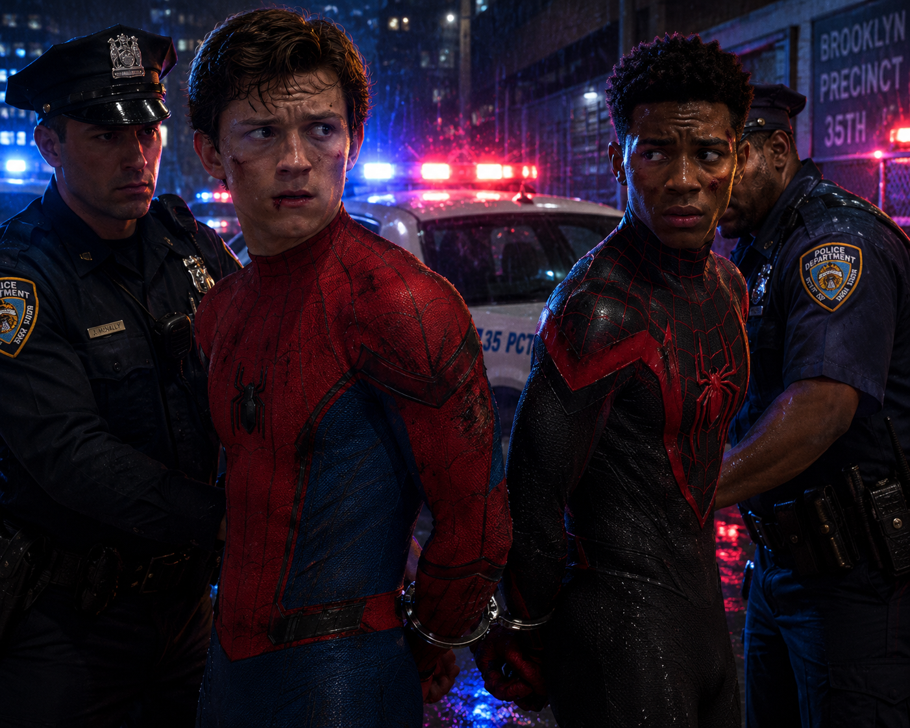

Peter Parker e Miles Morales, os Spider-mans, são presos hoje em casa
Com mandato de prisão, Rhino e Scorpion, em conjunto com a NYPD prendem Peter e Miles, por crime de formação de quadrilha e vandalismo.
Após anos de destruição e perseguições pelas ruas de Nova York, Peter Parker e Miles Morales foram finalmente presos pelas autoridades. Acusados de agir acima da lei, os dois vigilantes agora enfrentam a justiça. Para o Clarim Diário, a prisão representa um marco na luta contra os mascarados. A grande questão é: este é o fim da era dos Homens-Aranha?
Por trás de dois "heróis", se revelam dois verdadeiros vilões.
FINALMENTE! SPIDER-MAN SÃO PRESOS E NOVA YORK COBRA JUSTIÇA
Após anos espalhando destruição pelas ruas de Nova York sob o pretexto de combater o crime, os vigilantes conhecidos como Spider-Man finalmente foram presos. Peter Parker e Miles Morales foram detidos durante uma operação das autoridades e conduzidos algemados, encerrando — ao menos por enquanto — uma longa sequência de ações realizadas acima da lei.
Enquanto alguns insistem em chamá-los de heróis, os fatos falam por si: prédios destruídos, perseguições perigosas e milhões em prejuízos para a cidade. O Clarim Diário sempre alertou que ninguém, mascarado ou não, está acima da justiça. A pergunta agora é simples: será este o fim da era dos chamados "Homens-Aranha"?
